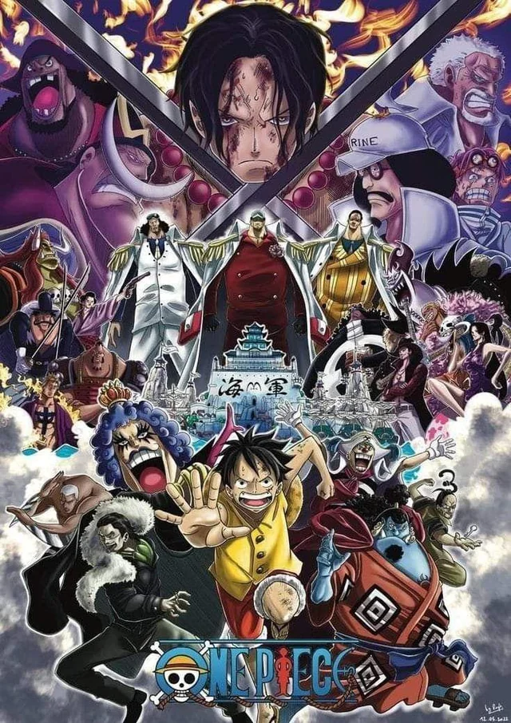

I am a very big One Piece fan I am both caught up on the manga/anime as well as well as play the cardgame competitively. The card game is what actually got me to start the series to begin with, and so from 2023-2024 I binged the show as much as I could. It has given me the opportunity to make a ton of new friends and social life being able to play in the tournaments, and I love being able to collect the cards, currently owning every alt art leader in the game in my collection. My favorite arc in the series is Marineford, creating a whole new level of power to set the tone of the series.
